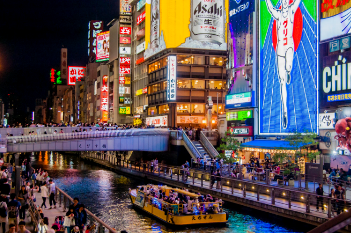
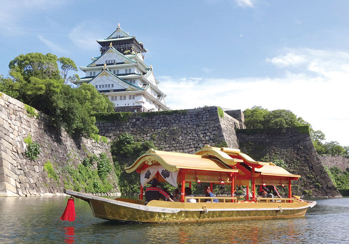

WELCOME TO OSAKA
오사카 방문을 환영합니다
HELLO OSAKA!
한국인이 가장 많이 방문하는 해외 관광지 1위
2년 연속 한국인이 좋아하는 인기 해외 도시는 단연 오사카!
지리적으로 2시간이 걸리지 않는 거리에 위치한 일본 오사카의 경우
디저트/라멘/스시 등 각종 먹거리로 유명한 지역입니다.
옛 일본의 수도이자 서정적인 도시 교토와 메이지유신 서양문물이 유입되어,
야경이 아름다운 고베를 함께 둘러보실 수 있는 메리트가 있습니다.

TOUR INFORMATION
OSAKA 여행 처음이세요?
오사카 관광은 최소 2박3일부터 최대 5박6일정도면 충분한 일정으로
맛있는 음식집을 찾아가는 맛집 여행부터 전통과 문화를 찾아가는
여행까지 다양한 컨셉으로 즐기실 수 있습니다.
